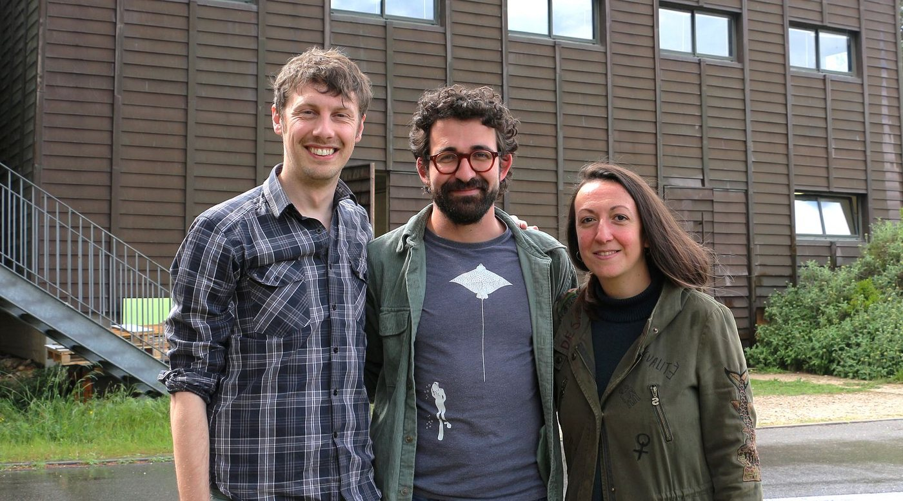
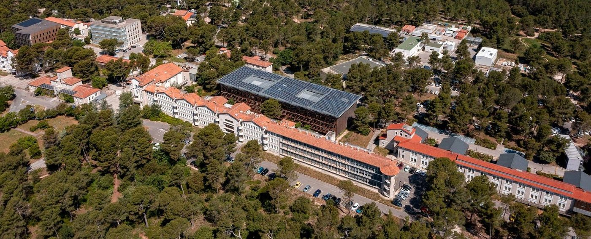

Who We Are
– Exocean, bringing the ocean inside the lab.
We are an Oceanology Laboratory founded by CNRS scientists with complementary expertise, united by the shared goal of better understanding the ocean's role in the global carbon cycle. Our work combines innovation, curiosity, and a collaborative spirit to develop new tools and insights into ocean systems.
Together, the team is developing a shared research framework around the ocean carbonate system — one that connects surface ecosystems, deep-sea feedbacks, and sedimentary records.

At the centre of the project, we are three researchers whose approaches bridge biology, geochemistry, and sedimentary processes:
- Thomas CHALK, Resident geochemist and ERC awardee for the ForCry project, I am developing laser ablation techniques for the miniaturisation of sample analysis through novel techniques. I specialise in the reconstruction of past ocean pH and CO₂ at high spatial and temporal scales.
- Olivier SULPIS, Carbonate cycle expert and ERC grantee behind the Deep-C project, I explore deep-sea carbonate dissolution under high pressure, in the laboratory, to unveil how marine sediments act as a long-term CO₂ sink and contribute to Earth's climate regulation.
- Julie MEILLAND, Specialist in planktonic foraminifera reproduction and in vitro culture. My work — ranging from cultured experiments to field-based studies — helps clarify the living conditions and carbon export role of these key calcifying organisms, contributing essential knowledge on the biological carbon pump.
Our key questions span from surface to deep-sea:
- What controls spatial variability in oceanic carbon fluxes?
- How are carbon fluxes impacted by calcifying plankton population dynamics?
- What is the future of ocean biogenic carbon production and export?
- How sensitive is climate change to initial climate conditions?
- How do deep-sea processes mitigate anthropogenic CO₂?
- And how are human activities already leaving traces in the sediment record?
Where We Are
We are based at CEREGE (Centre for Research and Teaching in Environmental Geosciences), a multidisciplinary research and teaching center covering a broad range of scientific topics at the highest level, supported by state-of-the-art analytical facilities. It is one of the leading Earth Science laboratories in France and internationally recognized for its scientific excellence.
Ideally located in the heart of the Technopôle de l'Arbois in Aix-en-Provence and in central Marseille on the Saint-Charles campus, CEREGE benefits from optimal conditions to foster collaborations and partnerships.
